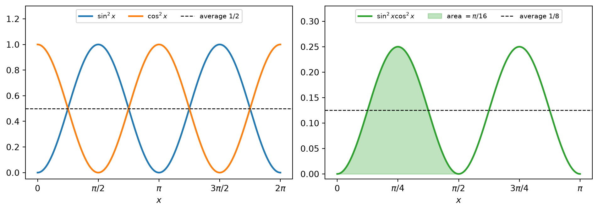
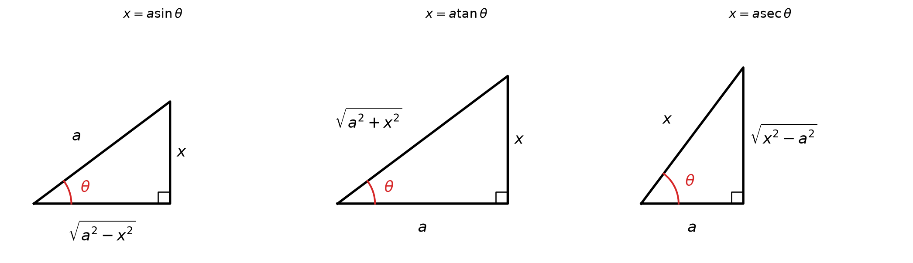
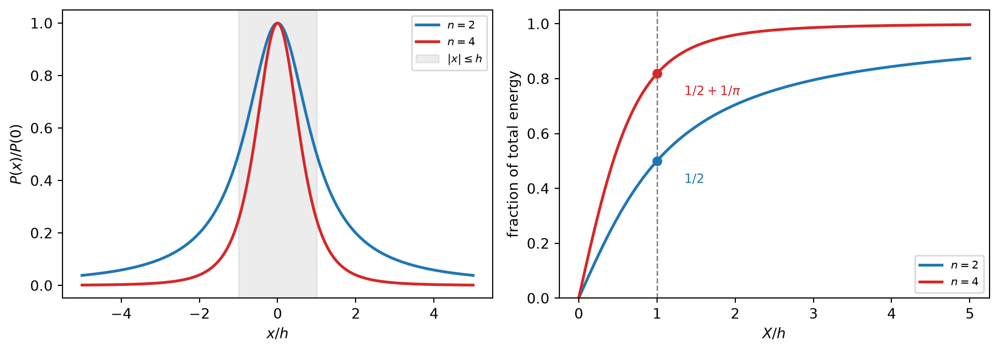

flowchart TD
S["Integrand"] --> Q1{"Is g'(x) already<br/>next to g(x)?"}
Q1 -- yes --> U["Plain substitution<br/>u = g(x)"]
Q1 -- no --> Q2{"Which class?"}
Q2 -- "powers of sin, cos<br/>or tan, sec" --> T["Trigonometric integral<br/>save one factor, convert the rest"]
Q2 -- "root of a^2 - x^2,<br/>a^2 + x^2, x^2 - a^2" --> R["Trigonometric substitution<br/>x = a sin, a tan, a sec"]
Q2 -- "ratio of<br/>polynomials" --> P["Partial fractions<br/>polynomial, log, arctan pieces"]
R --> T
T --> U
P --> U
Integrals: Additional Techniques of Integration
Reshaping an integrand until a substitution can finish the job
Substitution and integration by parts are general techniques. The methods in this note are special to particular classes of integrands: products of powers of trigonometric functions, algebraic functions containing \(\sqrt{a^2-x^2}\), \(\sqrt{a^2+x^2}\) or \(\sqrt{x^2-a^2}\), and rational functions. None of them integrates anything by itself. Each uses an identity or an algebraic decomposition to reshape the integrand into pieces that a substitution, or a short table of known integrals, can finish.
1 Trigonometric Integrals
1.1 The idea: keep one factor to serve as \(du\)
Four derivatives and two identities drive everything in this section.
| \(u\) | \(du\) | Identity that converts the rest |
|---|---|---|
| \(\sin x\) | \(\cos x\,dx\) | \(\sin^2 x + \cos^2 x = 1\) |
| \(\cos x\) | \(-\sin x\,dx\) | \(\sin^2 x + \cos^2 x = 1\) |
| \(\tan x\) | \(\sec^2 x\,dx\) | \(1 + \tan^2 x = \sec^2 x\) |
| \(\sec x\) | \(\sec x\tan x\,dx\) | \(1 + \tan^2 x = \sec^2 x\) |
The strategy is to split off exactly the factor that serves as \(du\) for one of these choices of \(u\), and then use the identity to write everything that remains in terms of \(u\). The identities relate squares, so only even powers can be converted. That is why the parity of the exponents decides which route works.
For \(\int\cos^3 x\,dx\), the choice \(u = \cos x\) fails because \(du = -\sin x\,dx\) does not appear. Instead, keep one cosine for \(du\) and convert the remaining \(\cos^2 x\): \[ \cos^3 x = \cos^2 x\cdot\cos x = (1-\sin^2 x)\cos x. \] With \(u = \sin x\) and \(du = \cos x\,dx\), \[ \int\cos^3 x\,dx = \int (1-u^2)\,du = u - \frac{u^3}{3} + C = \sin x - \frac13\sin^3 x + C. \]
1.2 Products of sines and cosines
NoteStrategy for \(\displaystyle\int\sin^m x\,\cos^n x\,dx\)
| Case | Keep | Convert the rest with | Substitute |
|---|---|---|---|
| \(n\) odd | one \(\cos x\) | \(\cos^2 x = 1-\sin^2 x\) | \(u = \sin x\) |
| \(m\) odd | one \(\sin x\) | \(\sin^2 x = 1-\cos^2 x\) | \(u = \cos x\) |
| \(m\) and \(n\) both even | nothing | \(\sin^2 x = \tfrac12(1-\cos 2x)\), \(\cos^2 x = \tfrac12(1+\cos 2x)\) | repeat until the powers are gone |
If both exponents are odd, either route works. Keeping a factor from the smaller odd power gives fewer terms, because the smaller even power is the one that gets expanded.
When both exponents are even, keeping one factor fails. If you keep one \(\cos x\), the leftover \(\cos^{n-1}x\) is an odd power, and an odd power of cosine cannot be written in terms of \(\sin x\) without a square root. The half-angle identities avoid this by trading a square for a first power at double the frequency.
1.2.1 Odd powers
A frequency inside the argument. For \(\int\sin^3(\omega x)\,dx\), keep one \(\sin(\omega x)\) and let \(u = \cos(\omega x)\), so \(du = -\omega\sin(\omega x)\,dx\): \[ \int\sin^3(\omega x)\,dx = \int\left(1-\cos^2(\omega x)\right)\sin(\omega x)\,dx = -\frac{1}{\omega}\int(1-u^2)\,du = -\frac{\cos(\omega x)}{\omega} + \frac{\cos^3(\omega x)}{3\omega} + C. \] Both terms carry \(1/\omega\). That is what a scaling check predicts: replacing \(x\) by \(\omega x\) in the integrand compresses the graph horizontally by a factor \(\omega\), so the antiderivative is scaled by \(1/\omega\).
A definite integral. For \(\int_0^{\pi/2}\cos^5 x\,dx\), keep one cosine and write \(\cos^4 x = (1-\sin^2 x)^2\). With \(u = \sin x\), the limits become \(0 \mapsto 0\) and \(\pi/2 \mapsto 1\): \[ \int_0^{\pi/2}\cos^5 x\,dx = \int_0^1 (1-u^2)^2\,du = \int_0^1 (1 - 2u^2 + u^4)\,du = 1 - \frac23 + \frac15 = \frac{8}{15}. \]
1.2.2 Even powers
One halving. \[ \int_0^{\pi}\sin^2 x\,dx = \frac12\int_0^{\pi}(1-\cos 2x)\,dx = \frac12\left[x - \frac12\sin 2x\right]_0^{\pi} = \frac{\pi}{2}. \]
A product of even powers. For \(\int_0^{\pi/2}\sin^2 x\cos^2 x\,dx\), the double-angle formula \(\sin x\cos x = \tfrac12\sin 2x\) shortens the work: \[ \sin^2 x\cos^2 x = \frac14\sin^2 2x = \frac18(1-\cos 4x), \] so \[ \int_0^{\pi/2}\sin^2 x\cos^2 x\,dx = \frac18\left[x - \frac14\sin 4x\right]_0^{\pi/2} = \frac{\pi}{16}. \]
Two halvings. Squaring after one halving produces another even power, \(\cos^2 2x\), which needs one more halving: \[ \sin^4 x = \frac14(1-\cos 2x)^2 = \frac14\left(1 - 2\cos 2x + \frac12(1+\cos 4x)\right), \] \[ \int\sin^4 x\,dx = \frac38 x - \frac14\sin 2x + \frac{1}{32}\sin 4x + C. \] Each round halves the highest power and doubles the frequency. Any odd power of \(\cos 2x\) that appears along the way goes back to the keep-one-factor route.
1.3 Why \(\sin^2\) averages to \(\tfrac12\)
The value \(\int_0^\pi \sin^2 x\,dx = \pi/2\) can be read off without an antiderivative. Over a full period of \(\sin^2\) (length \(\pi\)), the graph of \(\cos^2\) is a shifted copy of the graph of \(\sin^2\), so the two integrals are equal. Their sum is \(\int 1\,dx = \pi\). Hence each is \(\pi/2\), and the average value of \(\sin^2\) over a period is exactly \(\tfrac12\).
This is the familiar statement that a sinusoid \(A\cos(2\pi f_c t + \phi)\) has average power \(A^2/2\) and RMS value \(A/\sqrt2\), for any phase \(\phi\).

1.4 Different frequencies: orthogonality
Products such as \(\sin mx\cos nx\) with \(m \ne n\) fall outside the parity strategy. Adding and subtracting the addition formulas for \(\sin(A\pm B)\) and \(\cos(A\pm B)\) gives the product-to-sum identities: \[ \begin{aligned} \sin A\cos B &= \tfrac12\left[\sin(A-B) + \sin(A+B)\right],\\ \sin A\sin B &= \tfrac12\left[\cos(A-B) - \cos(A+B)\right],\\ \cos A\cos B &= \tfrac12\left[\cos(A-B) + \cos(A+B)\right]. \end{aligned} \] For positive integers \(m \ne n\), \[ \int_0^{2\pi}\sin mx\,\sin nx\,dx = \frac12\int_0^{2\pi}\left[\cos(m-n)x - \cos(m+n)x\right]dx = 0, \] because a cosine with a nonzero integer frequency integrates to zero over a whole number of periods. For \(m = n\) the first cosine is the constant \(1\) and the integral is \(\pi\). Collecting all three cases: \[ \int_0^{2\pi}\sin mx\,\sin nx\,dx = \int_0^{2\pi}\cos mx\,\cos nx\,dx = \pi\,\delta_{mn}, \qquad \int_0^{2\pi}\sin mx\,\cos nx\,dx = 0 . \]
Rescaling \(x = 2\pi t/T\) turns this into a statement about subcarriers over a symbol of duration \(T\): \[ \int_0^{T}\cos\!\left(\frac{2\pi k t}{T}\right)\cos\!\left(\frac{2\pi l t}{T}\right)dt = \frac{T}{2}\,\delta_{kl}, \qquad k, l \ge 1. \] This is why subcarriers spaced \(1/T\) apart can overlap in frequency and still be separated by correlating over one symbol. The argument needs the window to contain a whole number of periods of every difference frequency \((k-l)/T\). A frequency offset or a misaligned window breaks exactly this step, and the nonzero leftover integrals are the inter-carrier interference.
1.5 Powers of tangent and secant
NoteStrategy for \(\displaystyle\int\tan^m x\,\sec^n x\,dx\)
| Case | Keep | Convert the rest with | Substitute |
|---|---|---|---|
| \(n\) even, \(n \ge 2\) | \(\sec^2 x\) | \(\sec^2 x = 1+\tan^2 x\) | \(u = \tan x\) |
| \(m\) odd | \(\sec x\tan x\) | \(\tan^2 x = \sec^2 x - 1\) | \(u = \sec x\) |
| \(m\) even, \(n\) odd | no clean route | rewrite in \(\sec x\) alone | integration by parts or a reduction formula |
Even power of secant. For \(\int_0^{\pi/4}\tan^2 x\sec^4 x\,dx\), keep \(\sec^2 x\) and convert the other \(\sec^2 x = 1+\tan^2 x\). With \(u = \tan x\) the limits become \(0 \mapsto 0\) and \(\pi/4 \mapsto 1\): \[ \int_0^{\pi/4}\tan^2 x\sec^4 x\,dx = \int_0^1 u^2(1+u^2)\,du = \frac13 + \frac15 = \frac{8}{15}. \]
Odd power of tangent. In \(\int\tan^3 x\sec x\,dx\) the power of secant is \(1\), so \(\sec^2 x\) cannot be kept. The power of tangent is odd, so keep \(\sec x\tan x\) and convert \(\tan^2 x = \sec^2 x - 1\). With \(u = \sec x\), \[ \int\tan^3 x\sec x\,dx = \int(\sec^2 x - 1)\,\sec x\tan x\,dx = \int(u^2-1)\,du = \frac13\sec^3 x - \sec x + C. \] The same move handles larger powers: \[ \int\tan^5 x\sec^3 x\,dx = \int(u^2-1)^2u^2\,du = \frac17\sec^7 x - \frac25\sec^5 x + \frac13\sec^3 x + C. \]
No secant at all. For \(\int\tan^3 x\,dx\), write \(\tan^3 x = \tan x\sec^2 x - \tan x\). The first piece integrates with \(u = \tan x\): \[ \int\tan^3 x\,dx = \frac12\tan^2 x - \ln|\sec x| + C. \] Using \(u = \sec x\) on the first piece instead (as \(\sec x\cdot\sec x\tan x\)) gives \(\tfrac12\sec^2 x - \ln|\sec x| + C\). The two answers differ by the constant \(\tfrac12\), since \(\sec^2 x = 1 + \tan^2 x\). Both are correct.
Two entries are worth memorizing for the leftover cases: \[ \int\tan x\,dx = \ln|\sec x| + C, \qquad \int\sec x\,dx = \ln|\sec x + \tan x| + C. \] The second follows from multiplying by \((\sec x + \tan x)/(\sec x + \tan x)\): the new numerator \(\sec^2 x + \sec x\tan x\) is exactly the derivative of the new denominator. The trick looks unmotivated, so a systematic derivation is given at the end of this note.
2 Trigonometric Substitution
2.1 Writing the old variable in terms of a new one
In ordinary substitution the new variable is a function of the old one, \(u = g(x)\). Here it goes the other way: the old variable is written as a function of a new one, \(x = a\sin\theta\). This is the same rule read in the other direction, and it is legitimate as long as the map is invertible on the interval used, so that \(\theta = \sin^{-1}(x/a)\) recovers \(\theta\) from \(x\).
The goal is to turn the expression under the root into a perfect square.
ImportantTrigonometric substitutions
| Expression | Substitution | Range of \(\theta\) | Identity | Root becomes |
|---|---|---|---|---|
| \(\sqrt{a^2-x^2}\) | \(x = a\sin\theta\) | \(-\tfrac{\pi}{2}\le\theta\le\tfrac{\pi}{2}\) | \(1-\sin^2\theta = \cos^2\theta\) | \(a\cos\theta\) |
| \(\sqrt{a^2+x^2}\) | \(x = a\tan\theta\) | \(-\tfrac{\pi}{2}<\theta<\tfrac{\pi}{2}\) | \(1+\tan^2\theta = \sec^2\theta\) | \(a\sec\theta\) |
| \(\sqrt{x^2-a^2}\) | \(x = a\sec\theta\) | \(0\le\theta<\tfrac{\pi}{2}\) or \(\pi\le\theta<\tfrac{3\pi}{2}\) | \(\sec^2\theta - 1 = \tan^2\theta\) | \(a\tan\theta\) |
The ranges do two jobs. They make each substitution invertible, and they make the trigonometric function that comes out of the root nonnegative. That second property is what allows \(\sqrt{a^2\cos^2\theta} = a\lvert\cos\theta\rvert\) to be written as \(a\cos\theta\). For the secant case, the first range covers \(x \ge a\) and the second covers \(x \le -a\); in both, \(\tan\theta \ge 0\).
To return to \(x\) at the end, draw the right triangle that encodes the substitution and read off whatever trigonometric function is needed.

2.2 Sine substitution: the area of a circle
For the circle \(x^2 + y^2 = r^2\), symmetry gives \(A = 4\int_0^r\sqrt{r^2-x^2}\,dx\). Let \(x = r\sin\theta\) with \(0 \le \theta \le \pi/2\). Then \(dx = r\cos\theta\,d\theta\), \(\sqrt{r^2-x^2} = r\cos\theta\), and the limits become \(0 \mapsto 0\) and \(r \mapsto \pi/2\): \[ \int_0^r\sqrt{r^2-x^2}\,dx = r^2\int_0^{\pi/2}\cos^2\theta\,d\theta = \frac{r^2}{2}\left[\theta + \frac12\sin 2\theta\right]_0^{\pi/2} = \frac{\pi r^2}{4}. \] So \(A = \pi r^2\). Two things happened. Changing the limits removed any need to convert back to \(x\). And the substitution turned an algebraic integral into the even-power trigonometric integral of the previous section.
The indefinite version does need the triangle. With \(a\) in place of \(r\), \[ \int\sqrt{a^2-x^2}\,dx = \frac{a^2}{2}\left(\theta + \sin\theta\cos\theta\right) + C, \] and the left triangle gives \(\sin\theta = x/a\) and \(\cos\theta = \sqrt{a^2-x^2}/a\): \[ \int\sqrt{a^2-x^2}\,dx = \frac12 x\sqrt{a^2-x^2} + \frac{a^2}{2}\sin^{-1}\!\frac{x}{a} + C. \] For \(0 \le x \le a\) the two terms have a geometric reading: the area under the arc from \(0\) to \(x\) is a right triangle with legs \(x\) and \(\sqrt{a^2-x^2}\), plus a circular sector of angle \(\sin^{-1}(x/a)\).
2.3 Tangent substitution: the arctangent formula
For \(\int dx/(x^2+a^2)\), let \(x = a\tan\theta\). Then \(dx = a\sec^2\theta\,d\theta\) and \(x^2 + a^2 = a^2\sec^2\theta\): \[ \int\frac{dx}{x^2+a^2} = \int\frac{a\sec^2\theta}{a^2\sec^2\theta}\,d\theta = \frac{1}{a}\,\theta + C. \]
NoteArctangent formula
\[ \int\frac{dx}{x^2+a^2} = \frac{1}{a}\tan^{-1}\!\left(\frac{x}{a}\right) + C \]
This formula is the arctangent piece that partial fractions will need.
A root in the denominator brings in the secant integral: \[ \int\frac{dx}{\sqrt{x^2+a^2}} = \int\frac{a\sec^2\theta}{a\sec\theta}\,d\theta = \int\sec\theta\,d\theta = \ln\lvert\sec\theta + \tan\theta\rvert + C_1. \] The middle triangle gives \(\sec\theta = \sqrt{x^2+a^2}/a\) and \(\tan\theta = x/a\): \[ \int\frac{dx}{\sqrt{x^2+a^2}} = \ln\left|\frac{x + \sqrt{x^2+a^2}}{a}\right| + C_1 = \ln\left(x + \sqrt{x^2+a^2}\right) + C, \] where \(C = C_1 - \ln a\). The absolute value can be dropped because \(\sqrt{x^2+a^2} > \lvert x\rvert\).
2.4 Secant substitution
For \(\int dx/\left(x^2\sqrt{x^2-a^2}\right)\) with \(x > a\), let \(x = a\sec\theta\) with \(0 < \theta < \pi/2\). Then \(dx = a\sec\theta\tan\theta\,d\theta\) and \(\sqrt{x^2-a^2} = a\tan\theta\): \[ \int\frac{a\sec\theta\tan\theta}{a^2\sec^2\theta\cdot a\tan\theta}\,d\theta = \frac{1}{a^2}\int\cos\theta\,d\theta = \frac{\sin\theta}{a^2} + C. \] The right triangle gives \(\sin\theta = \sqrt{x^2-a^2}/x\), so \[ \int\frac{dx}{x^2\sqrt{x^2-a^2}} = \frac{\sqrt{x^2-a^2}}{a^2x} + C. \]
2.5 When not to use it
A root of the right shape does not by itself call for trigonometric substitution. In \(\int x\sqrt{a^2-x^2}\,dx\) the factor \(x\) is, up to the constant \(-2\), the derivative of \(a^2 - x^2\). So \(u = a^2 - x^2\) finishes in one line: \[ \int x\sqrt{a^2-x^2}\,dx = -\frac12\int u^{1/2}\,du = -\frac13\left(a^2-x^2\right)^{3/2} + C. \] The trigonometric route also works, but it is longer. Check for a plain substitution first.
2.6 Communications context: energy collected along a straight path
A user moves along a straight road. The point of closest approach to a base station is at perpendicular distance \(h\), and \(x\) is the position along the road measured from that point. If the path loss exponent is \(n\), the received power is \[ P(x) = \frac{K}{(h^2+x^2)^{n/2}}, \] where \(K\) collects the transmit power and antenna gains. At constant speed \(v\), the energy received while traveling from \(-L\) to \(L\) is \(\frac{1}{v}\int_{-L}^{L}P(x)\,dx\), so the question is how much of \(\int P\,dx\) comes from near the closest point.
Free space, \(n = 2\). By the arctangent formula, \[ \int_{-L}^{L}\frac{K\,dx}{h^2+x^2} = \frac{2K}{h}\tan^{-1}\!\frac{L}{h} \;\longrightarrow\; \frac{\pi K}{h} \quad (L\to\infty). \] The fraction of the total collected within \(\lvert x\rvert \le h\) is \(\tan^{-1}(1)/(\pi/2) = \tfrac12\).
The substitution \(x = h\tan\theta\) explains this. Here \(\theta\) is the angle between the road position and the perpendicular, as seen from the base station, and \(dx/(h^2+x^2) = d\theta/h\). With \(n = 2\), the received energy per unit angle is constant. The segment \(\lvert x\rvert \le h\) subtends \(\theta \in [-\pi/4, \pi/4]\), which is half of the full range \((-\pi/2, \pi/2)\).
Exponent \(n = 4\). With the same substitution, \((h^2+x^2)^2 = h^4\sec^4\theta\) and \[ \int\frac{dx}{(h^2+x^2)^2} = \frac{1}{h^3}\int\cos^2\theta\,d\theta, \] an even-power trigonometric integral. Over the whole road, \[ \int_{-\infty}^{\infty}\frac{dx}{(h^2+x^2)^2} = \frac{1}{h^3}\int_{-\pi/2}^{\pi/2}\cos^2\theta\,d\theta = \frac{\pi}{2h^3}, \] and over \(\lvert x\rvert \le h\), \[ \frac{1}{h^3}\left[\frac{\theta}{2} + \frac{\sin 2\theta}{4}\right]_{-\pi/4}^{\pi/4} = \frac{1}{h^3}\left(\frac{\pi}{4} + \frac12\right). \] The fraction is \(\tfrac12 + \tfrac{1}{\pi} \approx 0.82\). The weight per unit angle is now \(\cos^2\theta\) instead of a constant, so a steeper path loss concentrates the collected energy around the closest point.

3 Partial Fractions
3.1 The idea
Adding fractions combines simple terms into one rational function: \[ \frac{3}{x+1} - \frac{1}{2x-1} = \frac{5x-4}{2x^2+x-1}. \] Partial fractions runs this backwards. It splits a rational function \(P(x)/Q(x)\) into terms whose integrals are already known: \[ \int\frac{A}{ax+b}\,dx = \frac{A}{a}\ln\lvert ax+b\rvert + K, \qquad \int\frac{Bx+C}{x^2+a^2}\,dx = \frac{B}{2}\ln(x^2+a^2) + \frac{C}{a}\tan^{-1}\!\frac{x}{a} + K. \] Every rational function can be split this way, so every rational function integrates to a combination of a polynomial, logarithms, and arctangents.
3.2 Step 0: make the fraction proper
If \(\deg P \ge \deg Q\), divide first to get \(P/Q = S + R/Q\) with a polynomial \(S\) and \(\deg R < \deg Q\). For example, \[ \frac{x^3+x}{x-1} = x^2 + x + 2 + \frac{2}{x-1}, \qquad \int\frac{x^3+x}{x-1}\,dx = \frac{x^3}{3} + \frac{x^2}{2} + 2x + 2\ln\lvert x-1\rvert + C. \]
3.3 Step 1: factor the denominator and choose the form
| Factor of \(Q(x)\) | Terms in the decomposition |
|---|---|
| distinct linear \(ax+b\) | \(\dfrac{A}{ax+b}\) |
| repeated linear \((ax+b)^r\) | \(\dfrac{A_1}{ax+b} + \dfrac{A_2}{(ax+b)^2} + \cdots + \dfrac{A_r}{(ax+b)^r}\) |
| irreducible quadratic \(ax^2+bx+c\) (\(b^2-4ac<0\)) | \(\dfrac{Bx+C}{ax^2+bx+c}\) |
| repeated irreducible quadratic \((ax^2+bx+c)^r\) | \(\displaystyle\sum_{i=1}^{r}\dfrac{B_i x + C_i}{(ax^2+bx+c)^i}\) |
A quick count checks the form: the number of unknown constants must equal \(\deg Q\). A linear factor contributes one unknown and a quadratic factor contributes two. That is why a quadratic factor needs a linear numerator, and why a repeated factor needs every power up to \(r\).
3.4 Step 2: find the constants
There are two ways, and they combine well.
- Equate coefficients. Multiply through by \(Q(x)\) and match the coefficients of each power of \(x\). This gives a linear system with as many equations as unknowns.
- Substitute convenient values. The identity after multiplying by \(Q(x)\) holds for every \(x\), so plug in the roots of \(Q\). Each root kills all terms but one. For a distinct linear factor \(x - r\), this reduces to the cover-up rule: cover the factor \((x-r)\) in the original fraction and evaluate what is left at \(x = r\).
3.4.1 Distinct linear factors
\[ \int\frac{5x-4}{2x^2+x-1}\,dx, \qquad 2x^2+x-1 = (x+1)(2x-1). \] Write \(\dfrac{5x-4}{(x+1)(2x-1)} = \dfrac{A}{x+1} + \dfrac{B}{2x-1}\) and multiply by the denominator: \[ 5x - 4 = A(2x-1) + B(x+1). \] At \(x = -1\): \(-9 = -3A\), so \(A = 3\). At \(x = \tfrac12\): \(-\tfrac32 = \tfrac32 B\), so \(B = -1\). Therefore \[ \int\frac{5x-4}{2x^2+x-1}\,dx = \int\left(\frac{3}{x+1} - \frac{1}{2x-1}\right)dx = 3\ln\lvert x+1\rvert - \frac12\ln\lvert 2x-1\rvert + C. \] The factor \(\tfrac12\) comes from the inner derivative of \(2x-1\). The cover-up rule gives the same constants in one line each: \(A = \left.\frac{5x-4}{2x-1}\right|_{x=-1} = 3\) and \(B = \left.\frac{5x-4}{x+1}\right|_{x=1/2} = -1\).
3.4.2 A repeated linear factor
\[ \frac{1}{x^2(x+1)} = \frac{A}{x} + \frac{B}{x^2} + \frac{C}{x+1}, \qquad 1 = Ax(x+1) + B(x+1) + Cx^2. \] \(x = 0\) gives \(B = 1\), and \(x = -1\) gives \(C = 1\). The roots cannot determine \(A\), so match one coefficient: the \(x^2\) terms give \(A + C = 0\), so \(A = -1\). Then \[ \int\frac{dx}{x^2(x+1)} = -\ln\lvert x\rvert - \frac1x + \ln\lvert x+1\rvert + K = \ln\left|\frac{x+1}{x}\right| - \frac1x + K. \]
3.4.3 An irreducible quadratic factor
\[ \int\frac{2x^2-x+4}{x^3+4x}\,dx, \qquad x^3 + 4x = x(x^2+4). \] Here \(x^2 + 4\) cannot be factored over the reals, so \[ \frac{2x^2-x+4}{x(x^2+4)} = \frac{A}{x} + \frac{Bx+C}{x^2+4}, \qquad 2x^2 - x + 4 = (A+B)x^2 + Cx + 4A. \] Matching coefficients gives \(A + B = 2\), \(C = -1\), \(4A = 4\), so \(A = 1\), \(B = 1\), \(C = -1\). Split the quadratic term into a part that is a multiple of the derivative of \(x^2+4\) and a constant part: \[ \int\frac{2x^2-x+4}{x(x^2+4)}\,dx = \int\frac{dx}{x} + \int\frac{x\,dx}{x^2+4} - \int\frac{dx}{x^2+4} = \ln\lvert x\rvert + \frac12\ln(x^2+4) - \frac12\tan^{-1}\!\frac{x}{2} + K. \] The middle integral uses \(u = x^2 + 4\), and the last uses the arctangent formula with \(a = 2\).
3.4.4 Completing the square
When the irreducible quadratic has a linear term, complete the square to reach the arctangent form: \[ \int\frac{dx}{x^2+2x+5} = \int\frac{dx}{(x+1)^2+4} = \frac12\tan^{-1}\!\left(\frac{x+1}{2}\right) + C. \] In general, for \(\dfrac{Bx+C}{x^2+bx+c}\), write the numerator as \(\tfrac{B}{2}(2x+b) + \left(C - \tfrac{Bb}{2}\right)\). The first piece is a multiple of the derivative of the denominator and gives a logarithm. The second is a constant over a completed square and gives an arctangent.
3.5 The same algebra elsewhere
Partial fractions is also how a rational transfer function is broken into modes. For example, \[ H(s) = \frac{1}{(s+1)(s+2)} = \frac{1}{s+1} - \frac{1}{s+2}, \] where the cover-up rule gives both constants, and each first-order term corresponds to one exponential, \(h(t) = e^{-t} - e^{-2t}\). The roots of the denominator, which locate the logarithms in an integral, become the poles that set the decay rates.
4 Closing the Loop: Rational Functions of \(\sin x\) and \(\cos x\)
The substitution \(t = \tan(x/2)\), for \(-\pi < x < \pi\), turns any rational function of \(\sin x\) and \(\cos x\) into a rational function of \(t\). From the double-angle formulas and \(\cos^2(x/2) = 1/(1+t^2)\), \[ \sin x = \frac{2t}{1+t^2}, \qquad \cos x = \frac{1-t^2}{1+t^2}, \qquad dx = \frac{2\,dt}{1+t^2}. \] Partial fractions then finishes the integral, so the three techniques of this note connect into one pipeline.
A short case. Since \(1 + \cos x = 2/(1+t^2)\), \[ \int\frac{dx}{1+\cos x} = \int\frac{1+t^2}{2}\cdot\frac{2\,dt}{1+t^2} = \int dt = \tan\frac{x}{2} + C. \]
The secant integral, derived. \[ \int\sec x\,dx = \int\frac{1+t^2}{1-t^2}\cdot\frac{2\,dt}{1+t^2} = \int\frac{2\,dt}{1-t^2} = \int\left(\frac{1}{1-t} + \frac{1}{1+t}\right)dt = \ln\left|\frac{1+t}{1-t}\right| + C. \] To compare with the earlier formula, write \(\sec x + \tan x = (1+\sin x)/\cos x\) in terms of \(t\): \[ \frac{1 + \frac{2t}{1+t^2}}{\frac{1-t^2}{1+t^2}} = \frac{(1+t)^2}{(1-t)(1+t)} = \frac{1+t}{1-t}. \] So \(\int\sec x\,dx = \ln\lvert\sec x + \tan x\rvert + C\), with no trick required. This substitution always works, but it often produces heavy rational functions, so it is a last resort after the parity strategies.
5 Common Pitfalls
- Dropping an inner constant. \(u = \cos\omega x\) gives \(du = -\omega\sin\omega x\,dx\), so the result carries \(1/\omega\). Likewise \(\int dx/(2x-1) = \tfrac12\ln\lvert 2x-1\rvert\), not \(\ln\lvert 2x-1\rvert\).
- Keeping a factor when both powers are even. The leftover odd power cannot be converted without a square root. Even with even means half-angle identities.
- Using half-angle identities when a factor could be kept. It still works for odd powers but produces many more terms. Check parity first.
- Mixing up the two tangent–secant routes. Keeping \(\sec^2 x\) requires an even power of secant. Keeping \(\sec x\tan x\) requires an odd power of tangent. \(\int\tan^3 x\sec x\,dx\) has \(\sec^1\), so only the second route applies.
- Forgetting \(dx\) in a trigonometric substitution. \(x = a\sin\theta\) means \(dx = a\cos\theta\,d\theta\). This factor is often exactly what cancels the root.
- Leaving \(\theta\) in the answer. Either change the limits, or convert back with the reference triangle.
- A constant numerator over an irreducible quadratic. \(\dfrac{2x^2-x+4}{x(x^2+4)}\) needs \(\dfrac{Bx+C}{x^2+4}\). With \(C\) alone the coefficient equations have no solution.
- Skipping a power of a repeated factor. \(\dfrac{1}{x^2(x+1)}\) needs both \(\dfrac{A}{x}\) and \(\dfrac{B}{x^2}\).
- Decomposing an improper fraction. Divide first. Otherwise the coefficient equations are inconsistent.
- Logarithm instead of arctangent. \(\int dx/(x^2+4) = \tfrac12\tan^{-1}(x/2) + C\). A logarithm appears only when the numerator is a multiple of the derivative \(2x\).
6 Self-Check Toolkit
- Differentiate the answer. Every result in this note can be checked this way. Trigonometric antiderivatives often look different but differ by a constant, as with \(\tfrac12\tan^2 x\) and \(\tfrac12\sec^2 x\). Differentiating both settles the question.
- Test a decomposition at one point before integrating. For \(\dfrac{1}{x^2(x+1)} = -\dfrac1x + \dfrac{1}{x^2} + \dfrac{1}{x+1}\) at \(x = 1\): \(-1 + 1 + \tfrac12 = \tfrac12 = \dfrac{1}{1\cdot 2}\).
- Bound a definite integral. On \([0, \pi/2]\), \(0 \le \sin^2 x\cos^2 x = \tfrac14\sin^2 2x \le \tfrac14\), so the integral lies in \([0, \pi/8]\). The value \(\pi/16\) is exactly half of the upper bound, which matches the average of \(\sin^2\) being \(\tfrac12\).
- Cross-check with a reduction formula. For \(I_n = \int_0^{\pi/2}\cos^n x\,dx\), \(I_n = \tfrac{n-1}{n}I_{n-2}\) and \(I_1 = 1\), so \(I_5 = \tfrac45\cdot\tfrac23 = \tfrac{8}{15}\), matching the substitution result.
- Compare large-\(x\) behavior. \(\dfrac{2x^2-x+4}{x^3+4x} \sim \dfrac{2}{x}\), so the antiderivative should grow like \(2\ln x\). Indeed \(\ln\lvert x\rvert + \tfrac12\ln(x^2+4) \sim 2\ln x\), while the arctangent term tends to the constant \(-\pi/4\).
- Check units. If \(x\) and \(a\) have the same units, \(\int dx/(x^2+a^2)\) has units of \(1/a\), and so does \(\tfrac1a\tan^{-1}(x/a)\). \(\int\sqrt{a^2-x^2}\,dx\) has units of \(a^2\), and so do both terms of its antiderivative.
- Estimate numerically. Simpson’s rule with only four subintervals catches a wrong sign or a missing factor immediately:
| Integral | Simpson, 4 subintervals | Exact |
|---|---|---|
| \(\int_0^{\pi/2}\cos^5 x\,dx\) | \(0.5339\) | \(8/15 \approx 0.5333\) |
| \(\int_0^{\pi/2}\sin^2 x\cos^2 x\,dx\) | \(0.1963\) | \(\pi/16 \approx 0.1963\) |
| \(\int_0^{\pi/4}\tan^2 x\sec^4 x\,dx\) | \(0.5484\) | \(8/15 \approx 0.5333\) |
| \(\int_0^1\sqrt{1-x^2}\,dx\) | \(0.7709\) | \(\pi/4 \approx 0.7854\) |
| \(\int_1^2\dfrac{5x-4}{2x^2+x-1}\,dx\) | \(0.6664\) | \(\tfrac52\ln 3 - 3\ln 2 \approx 0.6671\) |
The quarter-circle estimate is the least accurate because the integrand has a vertical tangent at \(x = 1\), where Simpson’s error estimate breaks down. A discrepancy of a couple of percent there is expected and does not signal a mistake.